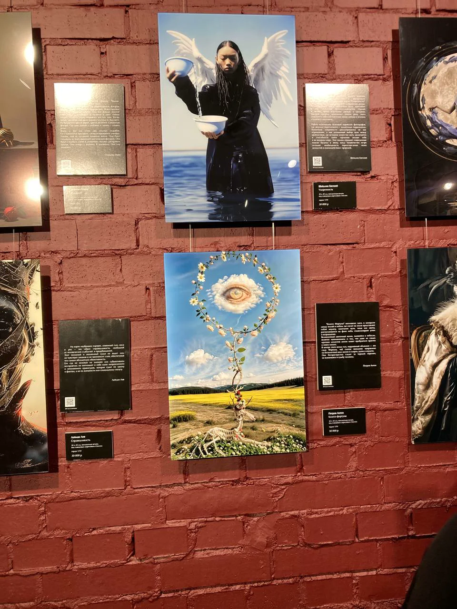
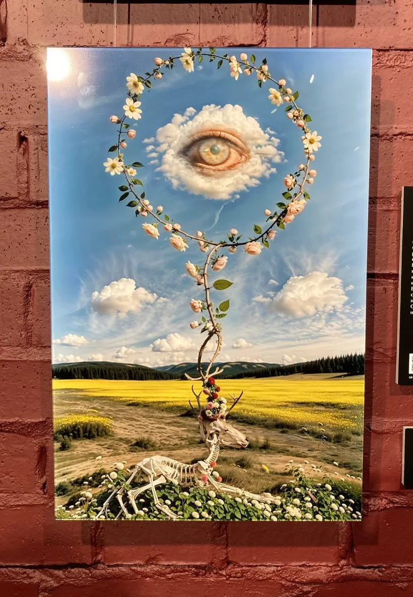

Исходный код
Санкт-Петербург · White Rainbow, Новая Голландия · 7 марта — 7 апреля 2024
Работа «Колесо фортуны».
Выставка «Исходный код» объединила нейросетевые работы учеников, преподавателей и сооснователей AI Uni. Общей темой стали старшие арканы Таро и их переосмысление через генеративное искусство.
Я представил «Колесо фортуны». Между землёй и небом разворачивается цикл: скелет становится основанием цветущего венка, а глаз среди облаков наблюдает за сменой удачи и неудачи, жизни и смерти. Даже из мрачного состояния здесь может появиться новое начало.
Фотографии и изображения


